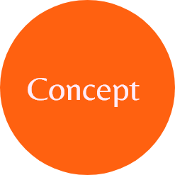

Het project Tuin van Eden is een initatief van het lectoraat van fysiologie. Ze wilden hun proces van het hele project vastleggen in een factsheet.
Tuin van Eden is een project om natuureducatie aan te bieden op verschillende plekken. Ik wilde in het factsheet dus veel natuurelementen voor laten komen. Om het proces vast te leggen ben ik zo op het idee gekomen om dit via het ontkiemingsproces te doen. Het laat namelijk heel mooi staps gewijs de voortgang zien. Ook de kleuren heb ik op basis van de natuur gedaan. Het vormt zo een goed geheel.

Dieper in gegaan op de mogelijkheden met Illustator
Eerste opdracht buiten school voor een opdrachtgever